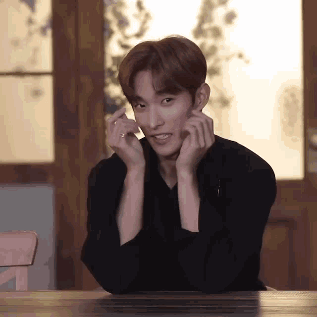

Format: Date Title Work (I don't have the date all the time, so you won't see it on every work.)
Poems
12/14/25 Title: Have you ever thought? Have you ever thought of noticing someone? Have you ever thought of checking on them? Your interactions aren't a ton, But they still love you, Between you two, Bond doesn't stem, Although you're busy, They still care, They wish you could see, The silence they'd tear.
Title: The Woman The woman walked freely, Her eyes glimmered with grace, The woman was lovely, Her presence made hearts race, The woman always smiled, You could see it wide from a mile, The woman was a kind soul, To lighten the world was her goal, The woman loved and loved, She gave herself away, It felt like being harshly shoved, Because now she can't stay.
Prose
12/14/25 Title: My Message to My Angel It's been years since you've left me, half a decade this year. I still feel immense regret for not noticing the patterns. You don't deserve sorrow and self-loathe; you're the light that shines bright in my life. Before you passed away, I'd still see that wide grin, lips curled so perfectly I could kiss them forever. I wish I was able to notice that it didn't even reach your eyes. You could've just told me, I would've went beyond the line to help you. I love you, darling.

Work In Progress (WIPs)
These are works I am still working on, though they will be updated everytime I modified it.
Mixtape #01: “Dude, what's up with you? You keep staring at her,” Nico points out as he plays with his new baseball. Lucas took his gaze off his friend, eyes falling to the floor sheepishly. As he thought of which words to let out, he recalled the lingering image of her. A sigh left Lucas' lips before his retort followed: “I can't get my eyes off of her.”
While the two friends conversed, Pablo was holding his camera, documenting their dialogue. “And then you, Pablo, keep recording every single thing we do,” Nico remarks, eyebrows knitted closely together at his two friends. Pablo, not bothering to put the gadget down, argued that it was for their memories. He considered adding the nostalgic vibe it gives off when they watch it later on, though he kept it to himself.